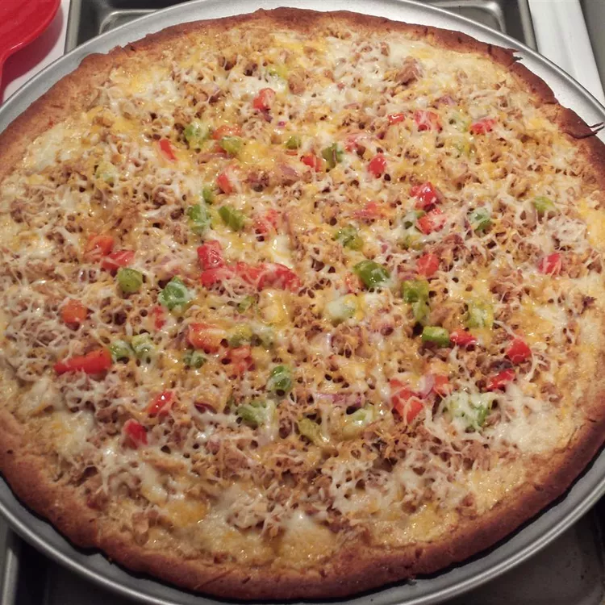

Pizza Tuna

Easy to make tuna pizza using a pre-made pizza crust.
Ingridients
- 1 (8 ounce) package cream cheese, softened
- 1 (14 ounce) package pre-baked pizza crust
- 1 (5 ounce) can tuna, drained and flaked
- ½ cup thinly sliced red onion
- 1 ½ cups shredded mozzarella cheese
- crushed red pepper flakes, or to taste
Steps
- Preheat an oven to 400 degrees F (200 degrees C).
- Spread the softened cream cheese on the pre-baked crust. Sprinkle the tuna and onions over the pizza; then top with shredded mozzarella cheese and optional red pepper flakes. Bake in preheated oven until the cheese has melted and started to brown, about 15 to 20 minutes.